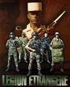

Forums galactiques > Assemblée Galactique : diplomatie officielle > ... La Légion Marche ...
Pages : 1
| Dark Vicking Respect diplomatique : 92  09/07 ETU 11:02 | Score : 9 Détails Dark Vicking à chanter cette chansons a la dernière séance de l'assemblée...
Ca voulait dire quoi ? Personne ne savait La Légion marche vers le front En chantant nous suivons, Héritiers de ses traditions Nous sommes avec elles. Nous sommes les hommes des troupes d’assaut, Soldats de la vieille Légion Demain brandissant nos Drapeaux En vainqueurs nous défilerons Nous n’avons pas seulement des armes Mais le diable marche avec nous. Ha, ha, ha, ha, ha, ha, Car nos aînés de la Légion Se battant là-bas, nous emboitons le pas. Pour ce destin de chevalier, Honneur, Fidélité, Nous sommes fiers d’appartenir Au 2ème REP. L'histoire continuera... | ||
| Dark Vicking Respect diplomatique : 92 09/07 ETU 17:35 | Score : 3 Détails Solmyr a déjà reçu les foudres des Légionnaires de Dark Vicking, son natal faisant partit maintenant de mes système divers...
Dark Vicking défila devant l'assemblée avec quelques hommes a lui... Leurs arrivée à fait grand bruits car tout le monde entendait les soldat chanter a tue tête: Venu volontaire, recherchant la guerre, Perdu dans la nuit, Marchant, on oublie. Nous combattrons, Nous, les légionnaires, Nous vaincrons Partout et sans recours. Sans attendre, la mission remplie, Nous partons Ecoutant le tambour. Septième compagnie toujours la première A bien combattu Et vient aujourd’hui Se préparer à une autre guerre Pour parer Les coups de l’ennemi. Pour la gloire La Légion Etrangère Nous donnerons Aujourd’hui notre vie. | ||
| Hussard Respect diplomatique : 167  09/07 ETU 17:40 | Score : 1 Détails La Légion (des Glyphes) à laquelle vous faites allusion, mon Cher Dark Vicking, était une unité d'élite
Soyez en digne et utilisez son nom à bon escient | ||
| Dark Vicking Respect diplomatique : 92 09/07 ETU 17:41 | Score : 1 Détails Cher commandant Hussard,
Votre connaissance des différentes Légion laissent à désirer. Regarder mon insigne et vous verrez alors que je parle d'une grande unités d'élite d'un ancien temps: La Légion Etrangère ... Vérifier vos dire cher ami... Je parle de la Légion qui le 30 avril 1863 résistait à 3 000 hommes tandis qu'ils étaient 62 ... Et d'autres fait d'armes encore plus glorieux suivent ce Régiments Ce n'est pas la Légion des Glyphes mais bien la Légion Etrangères... | ||
| Hussard Respect diplomatique : 167 09/07 ETU 17:44 | Score : 2 Détails A défaut de précision, l'amalgame était plausible
Le plagiait aussi !!! | ||
| Dark Vicking Respect diplomatique : 92 09/07 ETU 17:47 | Score : 5 Détails Je reconstitue juste un Régiment oublié de l'histoire...
Qui souffre aussi d'une mauvaise réputation mais dites ce que vous voulez Pourrissez encore mon RP... Ca m'empêchera pas de continuer... | ||
| Dark Vicking Respect diplomatique : 92 12/07 ETU 19:06 | Score : 1 Détails Dark Vicking ne pouvais pas resté insensible aux attaques de Galactor, il partis alors au combat.
Une colonne de Légionnaires ouvrait le chemin en chantant cette chansons: Nous sommes de la Légion, Si loin de nos pays Vers le front nous marcherons Pour vaincre l’ennemi Avec nos armes Nos cœurs et notre vie, Nous défendrons la France Contre l’ennemi. En tête de not’colonne Un drapeau claque au vent, C’est celui de la Légion, Qui flotte dans le vent, C’est pour la France, Pour notre vieille Légion, Tous les jours nous nous avancerons, Même si nous tombons. Les Légionnaires de Dark Vicking étaient heureux, ils allaient enfin se battre ... | ||
| Tyrian Respect diplomatique : 1334  12/07 ETU 22:32  | Score : 3 Détails Tyrian, qui s'était attardé plus que de coutume dans les salons de l'Assemblée, attiré par le discours d'un certain Pampelune...et qui finalement avait décidé de repartir vers ses contrées, fut attiré par les voix qui prononçaient à tout va le nom d'une certaine légion qu'il pensait tombée dans les oubliettes de l'histoire... Il s'approcha et entendit parler d'un certain Galactor... Il se dit que le sujet ne le regardait pas lorsque son x-com de poignet vibra.... il décrocha (vieille expression qui signifiait "activer") et vit le jolie sourire d'Anna...
-- Hmmm, ça fait un bail qu'on s'est pas causé ma bich...Anna ! -- Evidemment, si tu passais moins de temps avec ta grognasse d'impératrice ! -- Anna !!! Je t'interdis de parler ainsi de mon épouse ! Anna conserva son petit sourire en coin pendant deux secondes avant d'annoncer. -- Je te contacte pour te signaler qu'un certain Galac chais pas quoi vient d'envahir quatre de tes planètes.. Une goûte d'eau par rapport à tes possessions,,,mais je suis sure que ça te plaira pas !...et elle conserva son petit sourire provocateur en regardant le visage de son ancien amant passer par toutes les couleurs avant de parvenir à prononcer quelques mots... -- Il peut se considérer comme mort le Galamachin !!! Je te retrouve au QG Anna ! | ||
| Tyrian Respect diplomatique : 1334 13/07 ETU 11:20 | Score : 3 Détails Déception ! Enorme déception!!!
...Telle fut la réaction de Tyrian lorsqu'il regarda les tableaux de coordination.... -perte d'un sytème dans lequel il n'avait pas mis les pieds depuis des lustres.. -pertes insignifiantes de quelques cailloux épars dans des sytèmes lointains.... Tyrian s'attendait à un peu d'action et force était de constater qu'il avait affaire à deux petits soldaillons sans envergure qui s'étaient affublés de titres pompeux tels que "General" Straken pour l'un et Galactor (tout juste Galac à tort) pour l'autre....Quelle misère... Cependant ses Chefs fraisMen attendaient une réaction de sa part et il se devait de remplir son rôle malgré la minijupe d'Anna qui glissait de plus en plus haut comme une invitation à......détourner le regard vers d'autres paysages que la guerre........... .......Il prit sa décision et un simple geste discret suffit. Chacun regagna le postte qui était le sien... Il allait faire chaud dans certains systèmes de la galaxie | ||
| Général De Guerre Respect diplomatique : 4  15/07 ETU 11:38 | Score : 1 Détails Le Général de Guerre était avec ces légionnaires sur le chemin du retour il venait rentrais d'une guerre.
En marchant il chantait : Salut camarades, Donnons-nous l’accolade, Nous allons sac au dos, flingue en main, Faire ensemble le même chemin. A nous le désert, Comme au marin la mer, Il nous faut du soleil, de l’espace, Pour redorer nos carcasses. | ||
| Dark Vicking Respect diplomatique : 92 15/07 ETU 12:03 | Score : 1 Détails Salut Mon Camarade
Salut mon Frère Salut mon Parent... On nous appelle les fortes têtes, On a mauvaise réputation, Mais on s’en fout comme d’une musette, On est fier d’être à la Légion, Et ce qu’ignore le vulgaire, C’est que du soldat au colon, Ils ont une âme de mousquetaire, Les légionnaires. | ||
| Général De Guerre Respect diplomatique : 4 15/07 ETU 12:16 | Score : 0 Détails Soldats de la Légion Etrangère
Se sont battus Partout en Algérie Beaucoup sont tombés, de braves légionnaires Pour la Légion, qui est notre Patrie Comme nos anciens Nous défendrons l’Algérie Contre le Diable Et les fellaghas Avec nos drapeaux, Honneur, Fidélité Nous tomberons ou nous vaincrons au combat |
Pages : 1
Forums galactiques > Assemblée Galactique : diplomatie officielle > ... La Légion Marche ...